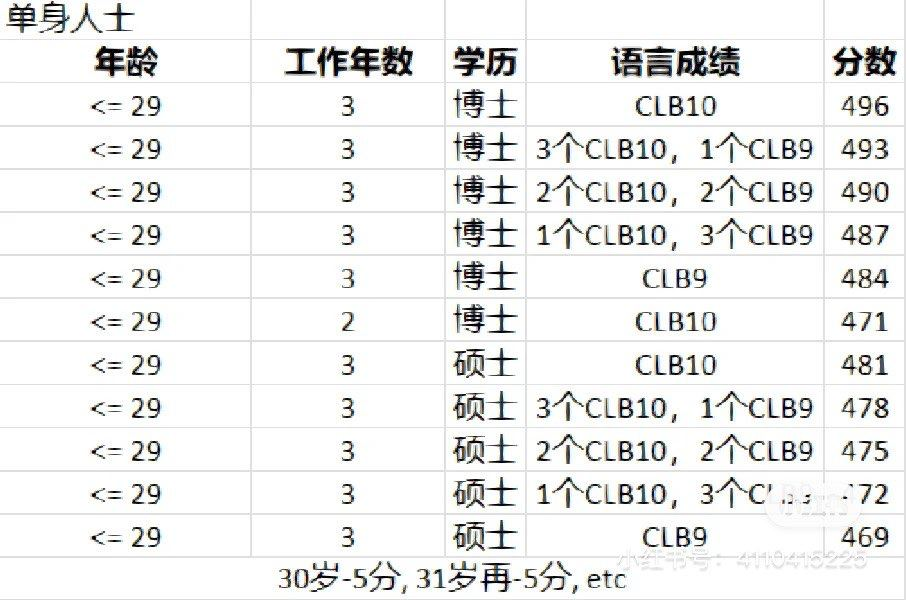

这篇主要介绍一下加拿大 EE FSW 入池，申请到获批的流程。
首先需要声明一下这篇文章只是记录了我们申请的流程和经验，并不提供法律意见～而且很多政策和要求都瞬息变幻，还是要以官方文件为准～如果自己DIY有一些心里没底的话可以考虑找移民顾问或者律师～
EE FSW 是什么
EE 的全称是 Express Entry （快速通道），包含若干项目，我们使用的项目是 FSW (Foreign Skilled Workers)联邦技术移民。EE 实行的是打分制，根据申请人的条件（年龄，工作经验，学历，语言成绩等）折算成分数。移民局会不定期进行“捞人”，比如这周捞3600人，就把池子中的候选人分数由高到低排，前3600人会收到邀请，正式开启申请永久居民的流程。
入池
EE FSW 的第一步是入池，也就是获得一个分数。入池前需要准备好：
- 英语考试。如前文所说，加拿大 EE 需要英语成绩，官方接受雅思 G 类和思培两种考试，需要是三年以内的成绩。对雅思 G 类准备感兴趣的可以移步上一篇博文
- 学历认证。学历认证只需要认证最高学历～对我来说就是认证博士学位。美国学校的学历认证还是比较快的，我选择的是 WES 的认证，只需要在网站上提交申请，然后让学校把成绩单在线递送给 WES即可。网上当时说要 35 天，但实际上我3月29号提交申请，4月6号就认证完成了～不过还是建议尽早认证～
了解自己的分数和捞人历史
入池前还可以利用官方的打分计算器估计一下自己的分数，也可以参考知道自己语言需要多少分之类。下图提供了大部分 FSW 申请人对应条件的分数：

IRCC 捞人的历史（捞的人数和分数线）可以在这个网站上看到。 我们当时两个人一起是 498 分，被捞那批的分数线是 488 分。
申请和等待
收到了 IRCC 发的 Invitation to Apply (ITA) 邮件之后就可以开始申请流程了。我们用的是 GCKey portal 申请，首先要填写各种个人信息，全部填好之后系统会根据填的信息生成一份文件 checklist。把这些文件按照 checklist 准备好提交后即可。下面列一些比较常见，花时间或者令人困惑的材料准备。
材料准备
无犯罪证明 (Police Certificates)
中国
中国的无犯罪证明需要公证件，公证的翻译件。感谢我给力的老妈办下了中国的无犯罪证明。具体流程我个人不是非常清楚，大约就是先去地方派出所开具无犯罪证明，再拿着这份无犯罪证明去公证处进行翻译和公证。各地的办事方式，需要的材料等等大约都不大相同，需要咨询当地的派出所。
官方介绍：How to get a police certificate – China
美国
美国的无犯罪证明是由 FBI 开具的，可以在线申请非常方便。
- 填表
- 打指纹：打指纹可能是美国无犯罪证明申请最坑的地方。需要去 USPS 打指纹，打一次 $50。我去了公司附近的一家 USPS，但是那个机器很难用，不论我咋打我的指纹都没有办法被识别为合格。还好 USPS 的小哥挺有耐心的，陪我搞了半个多小时，试了各种方法，但最后还是只有一个指头被机器认可了。最后只好决定就这样试试看了。
- 收到报告：好在指纹在机器上识别为不合格并没有太大问题，打完指纹回家的路上我就收到了拌好的无犯罪证明邮件的 pdf 文档～这个效率在美国真的是很令人惊讶了！
官方介绍：How to get a police certificate: United States
香港 因为 R 兄曾在香港念书，所以他需要办香港的无犯罪证明。比起香港的无犯罪证明，前面两个那可是太 easy了～
- 获得 Request Letter：获得 Request Letter 的方式就是在 EE 文件 checklist 的香港无犯罪证明那一栏提交一封信，告知 IRCC 需要 Request Letter
- 采集纸质指纹：香港无犯罪证明同样需要指纹，然而必须是纸质版。我们从网上买了美国的官方印指纹的纸，然后去警察局打指纹。然而香港警署需要指纹上有警察局的公章，但是我们 town 的警察局根本就没有公章这个东西。最后 R 兄跑了附近好几个 town 终于打上了指纹并盖上了公章 😮💨 非常坑人
- 寄送材料：材料包括申请表，同意书，个人资料，香港身份证或者有效履行证件影印本，IRCC Request Letter，纸质指纹，一张 250 港币的支票
- 等待奇迹：为啥说是等待奇迹呢，因为香港的无犯罪证明是由香港警署直接发送给加拿大移民局的。所以我们也不知道办好没，发了没，加拿大方面收到了没等等，完全是一片黑暗。不过比较好的是可以通过邮件和香港警署交流，询问文件有没有送达，当前的状态等。九月初的一天，我们突然就发现 tracker 上显示收到了 police certificate，也并没有说是哪里的，我们就猜测是香港的了 😂
官方介绍：How to get a police certificate – Hong Kong Special Administrative Region 无犯罪纪录证明书现身处海外申请人须知
最后分享一下香港无犯罪证明时间线：
- 8.11 寄出
- 8.21 包裹到达香港
- 8.23 香港警署发邮件告知支票上没有签名 😂
- 8.24 请朋友帮忙当场递交新的支票
- 8.25 开始处理
- 9.7 递交给加拿大方面
- 9.11 Tracker 上显示收到 police certificate
工作证明 (Proof of Work Experience)
官方关于工作证明的材料要求可以在这里找到 ，摘录如下：
a reference or experience letter from the employer, which should be an official document printed on company letterhead (must include the applicant’s name, the company’s contact information [address, telephone number and email address], and the name, title and signature of the immediate supervisor or personnel officer at the company) should indicate all positions held while employed at the company and must include the following details: job title, duties and responsibilities, job status (if current job), dates worked for the company, number of work hours per week and annual salary plus benefits; and
然而现实情况是很多公司的 Employment Verification Letter (EVL) 是固定格式的，并不一定可以提供 IRCC 所需要的全部信息。我个人的操作如下：
- 联系公司 HR 部门，说明需要一封 EVL，需要包含 job title, duties, dates and number of work hours, salary plus benefits
- 前司的 HR 请我自己草拟一封信，说明职位的 job duties；之后他们填上其他的信息（工作时长，时间，年薪，联系方式等），加上 letterhead 发给了我
- 现司的 HR 告诉我公司的 EVL 是固定模板不可以更改，于是我拿了一份公司开具的有公司抬头的 EVL
- 由于现司的 EVL 不含有 IRCC 所有信息，我草拟了一封 Reference Letter，信里面包含了 IRCC 需要的所有信息（重点是job duties），并请 manager 签字。由于这封信无法有公司抬头，所以包含了 manager 的联系方式。
- 由于我博士期间是 Research Assistant 也算做工作经验，所以联系了导师要 EVL，导师让我草拟 job duties 的部分，其他的信息和抬头由实验室提供。
资金证明
官方关于资金证明的材料要求可以在这里找到，摘录如下：
The applicant should provide an official letter(s) from one or more financial institutions that lists all current bank and investment accounts as well as outstanding debts, such as credit card debts and loans. The letter(s) must be printed on the letterhead of the financial institution and must include the applicant’s name, the contact information of the financial institution (address, telephone number and email address), the account numbers, the date each account was opened and the current balance of each account as well as the average balance for the past six months.
IRCC 要求移民拥有一定数额的财产以便安家，而资金证明就是证明你拥有要求的财产数额。目前的要求是 1 个人需要有 $13,757 加元，两个人的话需要 $17,127 加元。
文件要求金融机构开具的信要包含很多信息，而事实情况是很多金融机构有固定模板，无法含有所有要求的信息，有的甚至不开这样的信。我联系了我有帐户的所有银行和金融机构，尽力地要到了类似的信，要不到的就只得作罢了。
在准备材料的过程中我还看到有的人说并不需要所有账户，虽然要求中的确说 all current bank and investment accounts。有的人说只要你的账户里的钱大于要求数额即可。另外还有人说信用卡，房贷车贷不需要 disclose。的确如果包含房贷的话，我就不可能有要求的财产数额了 😂 另一个问题是如果把所有的金融账户信息（包括 checking，saving，信用卡，401k，股票等等）都包含进来，文件会非常大超过文件大小限制。我最终的操作是：
- Disclose 了我的主要 saving 和 checking 账户
- 对于每个账户，我包含了银行开的资金证明信（如果有的话，尽量包含IRCC要求的信息）和半年的 statements
- 文件第一页为一封解释信，解释了：无法获得 IRCC 要求的包含所有需要信息的 proof of funds letter；每个账户的信息汇总：开户日期，当前金额（美元加元），六个月的平均金额（美元加元），以及对应的附件页码
Common Law
加拿大比较好的一点就是承认 Common Law 关系，不需要法定结婚即可一起申请移民～不过 Common Law 需要的文件在 IRCC 官网上比较模糊，他们只提到了需要证明两个人持续共居时间需要超过一年（见链接）。可以证明这点的文件可以有很多，这个网页上提供了一些思路。这篇里就介绍一下我们 Common Law 准备的材料
- IMM 5409E：这个表格是必须的～在网上下载填好打印之后需要公证。我们是去附近的 BoA 找的公证服务
- 房契和房贷文件: 我们在申请时正好买房刚刚超过一年。如果是租房的话最好是有两个人都有名字的租房合同，由于我们之前租房是和室友合租并没有这样的文件所以就没有提供。
- 保险受益人含有对方：主要就是 401k 还有人寿保险的受益人～
- 两个人的驾照有共同地址
- 一年的电费和气费账单（分别是两个人的名字，但是是一样的地址）
- Love Story：这个材料官方并没有要求提供，但是在网上看到很多人都提供了（甚至是婚姻关系的都有提供的）。保守起见我们也写了一个。顾名思义这个材料就是声情并茂的讲述俩人咋认识的咋在一块的，关键是要图文并茂，最好有很多合照以及和家人朋友一起的合照～两个人需要各写一份～最后我的文件有15页，对象写了10页。
体检
体检必须去官方指定的地方进行体检。麻省整个省只有一家机构可以做，一个人500刀。我们5月25号预约的，预约到了6月13号，6月21号收到了 information sheet，也就是上传的文件。体检其实没干啥，抽了点血，拍了个X光，然后唠了唠嗑就没了……这 500 块真的是太好赚了……
听说现在不需要 upfront medical exam 了，变成了先给 IRCC 提交申请，IRCC通知去做体检的时候再去。
打指纹
打指纹是在提交申请后进行的操作。提交申请后，IRCC会发送一封指纹信，要求我们在30天内去打指纹。在美国是去 USCIS 打指纹，然而麻省的USCIS太过火爆，根本约不到一个月内的appointment，我们最后去了 New Hampshire 打指纹，但就是这样也只约到了 8月23号的😳
等待：追踪申请
接下来便是漫长的等待过程～等待中有两个方式可以追踪申请的情况，一个是通过申请时使用的 GCKey portal，一个是使用 tracker～ tracker 需要在获得了 UCI 号之后注册。我们的体验是 tracker 更新的内容更多～
基于我们的背景，本来以为我们一定会被安全调查的，但是很幸运的并没有。听说如果在美国待的久的话安全调查的几率会有所降低，当然这只是道听途说不知道真的假的。但是还是挺幸运没有进入安调黑洞的～
不过我们的 tracker 在九月初就已经四个项目都绿了（通过），但是我们直到11月才收到 COPR number（Confirmation of Permenant Residence, 也就是申请通过获得永居资格）。我们猜测 IRCC 会攒一波人，攒够人数了再一起发 COPR，因为大约同时间有很多群友都收到了 COPR 的信息～
贴签
之前听说的案例都是直接把需要的材料直接寄给加拿大的，不过我们收到的 COPR 的信告知我们需要把所有材料寄给加拿大签证中心。在美国的加拿大签证中心有两家，一家在纽约，一家在洛杉矶。我们本来还想直接肉身去纽约递交材料的，不过最后看了看纽约的车票和住宿太贵了就放弃了😂
寄材料需要通过 VFS Global 的网站，具体怎么操作可以参考这个网站。首先需要在这个网站上进行账户注册，注册之后购买 2 Way Courier Service。
需要寄过去的材料请依据 IRCC 提供的 COPR 信和这个网站上的要求。
理论上我们两个人的材料需要分两个包裹寄，但是我们邮件问了 VFS Global 之后他们说可以一起寄过去，但是需要加一个 return label 因为他们会寄两个包裹回来。所以我们去 UPS 又买了一个 return label 附在了材料里。最终我们寄了：
- 护照
- IRCC 的 passport request letter
- 照片（背面需要有照相馆地址和拍照日期）
- TT Service Consent Form
- Transmission fee 支票
- 2 Way Courier Service Confirmation letter
- 一个 return label
护照贴好签寄回来的那一周我们还在度假，于是我们错过了 UPS 的第一次投递。理论上他们应该再次投递，结果他们说寄到了附近的一家 UPS store（后来才知道这是不符合流程的）。结果我们回来的第二天去那家 UPS store，说只有 R 兄的文件，我的不在那里……而且那个 UPS store 的老白男态度非常之差，令人发指。我当时就非常慌是不是寄丢了……周一我就疯狂打 UPS 电话，R 兄还去了 UPS center，结果他们说并不知道在哪里，让再等一天，晚上大概会有更新。好在晚上突然护照就到了，也许是第一次投递完他们忘在车里了之类。还好最后是送到了的！不然真的不知道咋办……
申请时间线
最后分享一下我们的申请时间线以供参考：
- 5.6 IELTS
- 5.10 收到雅思成绩
- 5.11 入池
- 5.24 ITA
- 7.1 递交申请，收到 AOR (Acknowledgment of Receipt)
- 8.8 MEP (Medicals passed), IRCC 通过 GCKey portal 发送了 HK police certificate request letter, Biometrics letter
- 8.23 Get biometrics done
- 8.31 tracker background verification done
- 9.11 Received (HK) police certificate, tracker all green
- 11.8 Got COPR number in the tracker
- 11.16 COPR Email
- 11.20 材料送到纽约的加拿大签证中心
- 11.28 IRCC email visa affixed
- 11.30 VFS received and couriered
- 12.4 拿到护照
写在最后：越来越卷的 EE？
2023 年捞人的分数也逐渐水涨船高了，我们很幸运地有点赶上末班车的感觉，之后的分数线节节攀升，我们的 498 当年还算高分都排不上了。另外在我们被捞后不久，EE 开启了新的 category based draw，即根据职业类别进行捞人。Category Based 目前有六个类别，其中和我身边人关系比较近的大约是 STEM 类别。然而 category based 实行以来只捞过两次 STEM 类别。
如果现在还想走加拿大的 EE FSW 项目，以及背景是 STEM 相关的话，可以考虑走的是安大略省省提名项目（OINP）。这个安省提名项目针对符合邀请的申请人直接在 EE 中加 600 分，基本上获得了这个被 EE 捞就只是时间问题了。而且申请非常简单，在EE入池的时候钩上对安省感兴趣即可。不过这个项目对居住地有要求（要求住在安省）。
由于最近也捞了不少法语项目，而且法语加分也比较多，也有很多人开始学习法语来提高自己的背景。感觉也是有一定道理的，但是由于我个人没有尝试过没有办法评估难度。
其他资料
因为我们是 DIY 申请，更要感谢各种网友提供的无私的帮助～
- 咪尾酱最近也写了她的EE 申请之路，移步这里
- 加拿大 Express Entry Discord server：这个 server 集合了很多想要，正在和已经申请了加拿大 EE 项目的人，非常活跃～可以看到很多人的经验～
另外分享两位加拿大移民顾问信息，虽然我们没有找她们付费服务，但是她们有提供很多关于加拿大的信息，个人认为很有帮助：
- 大橙：附上她的豆瓣主页
- Joytitude：微信Joytitude，公众号JoytitudeCA，加拿大相关信息请见她豆瓣主页
我们的下一步是在 COPR 签证过期之前登陆加拿大激活永久居民身份并办理枫叶卡。有机会再写一下关于登陆的事宜吧～